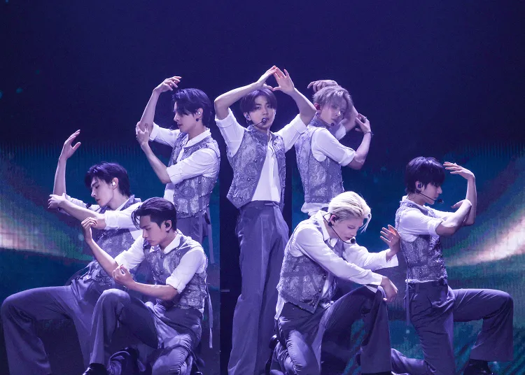
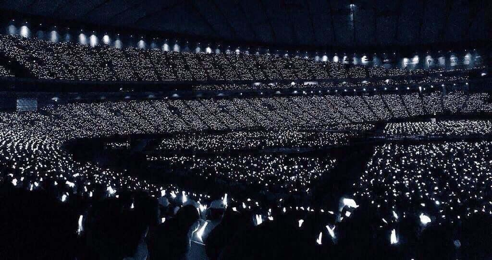

Groups
 K-pop is dominated by major entertainment companies like HYBE, JYP Entertainment, YG Entertainment, and SM Entertainment, each known for producing globally successful idol groups. HYBE manages BTS, ENHYPEN, and TXT, while JYP is behind groups like TWICE, Stray Kids, and ITZY. YG Entertainment is home to BLACKPINK and TREASURE, known for their bold visuals and hip-hop style. Each company has its own distinct training system and musical identity, shaping the artists they debut.
These companies not only focus on music but also on visuals, storytelling, and social media strategy to market their groups internationally. Newer agencies like ADOR (under HYBE, managing NewJeans) and Starship Entertainment (home to IVE) are also gaining traction. With each debut, K-pop companies aim to create unique concepts, helping groups stand out in a highly competitive industry.
Most Famous K-Pop Groups (Sep 2025):
-
BLACKPINK: 32.0M monthly listeners

-
TWICE: 26.6M monthly listeners

-
BTS: 26.0M monthly listeners

Concerts
K-pop concerts are famous for their high energy, elaborate choreography, and spectacular stage production. From massive LED screens and synchronized dance formations to pyrotechnics and costume changes, K-pop concerts are theatrical experiences. Groups like BTS, BLACKPINK, and TWICE fill stadiums worldwide, with fans traveling long distances to see them live.
 Many K-pop artists also hold world tours, bringing Korean music to fans across Asia, North America, Europe, and beyond. Virtual concerts have also become more popular, especially during the pandemic, allowing fans from all over the world to tune in at once. The sense of connection between artists and their fans during these shows is a huge part of what makes K-pop concerts special.
Purchase Tickets Here: Ticketmaster
Fandom Culture
K-pop fandoms are incredibly organized, passionate, and global. Each group has an official fandom name
and
color—for example, BTS's ARMY, BLACKPINK's BLINKs, and Stray Kids’ STAY. These fandoms support their
idols
by streaming music, organizing fan events, and even crowdfunding advertisements for birthdays and
anniversaries.

Fan culture also includes creating fan chants, attending fan sign events, and buying albums and merch in bulk to support their favorite group’s chart rankings. Social media plays a huge role, as fans use platforms like Twitter, TikTok, and Weverse to stay connected with idols and each other. K-pop fandoms have even been known to participate in charitable causes and activism, showing their collective power beyond music.